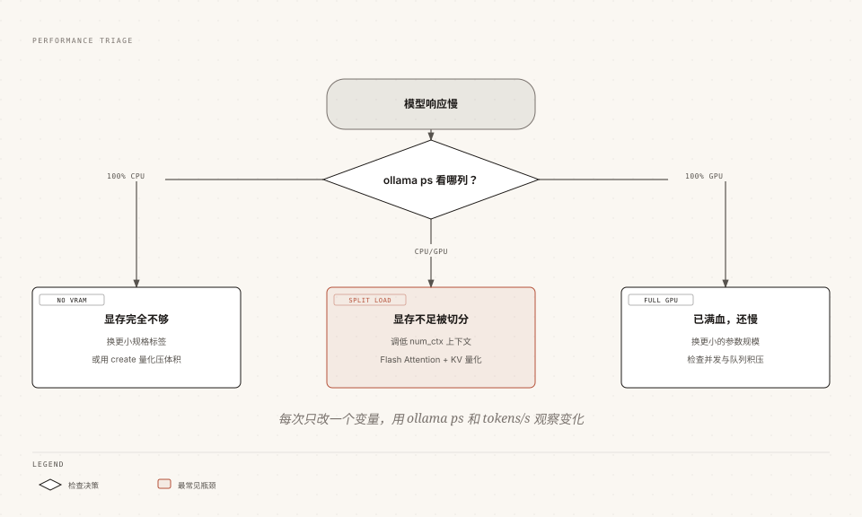

Ollama GPU とパフォーマンス最適化
モデルが遅い場合、その原因の9割は `ollama ps` の一行に手がかりがあります。この章では、調査方法からハードウェアサポート、複数GPUの割り当て、そして Flash Attention と KV キャッシュ量子化という2つの上級スイッチまで説明します。
目標はただ一つ：GPUを最大限に活用させること。
最初のステップは常に：モデルがどこで動いているかを確認する
パフォーマンス調査の最初のアクションは PROCESSOR 列を確認することです。そこにモデルの weights がどこに配置されているかが直接示されています。
$ ollama ps NAME ID SIZE PROCESSOR CONTEXT UNTIL qwen3.5:27b a8b2c9d3e4f5 20.4GB 52%/48% CPU/GPU 4 minutes from now
3つの状態はまったく異なる状況に対応します：
| PROCESSOR の表示 | 意味 | 速度の見込み |
|---|---|---|
| 100% GPU | すべての重みがVRAMに収まる | GPUのフルスピード |
| 100% CPU | VRAMに完全に収まらず、純粋なメモリ推論 | 1〜2桁遅い |
| 52%/48% CPU/GPU | VRAM不足で、重みが分割される | 明らかに低下し、デバイス間転送がボトルネック |
生成速度と合わせて見るとより直感的です：APIレスポンス末尾の eval_count / eval_duration * 10^9 が token/s です（使い方はAPI章の後半を参照）。この数値を毎回の最適化の定量的な基準にします。
遅いモデルに遭遇したら、以下の決定フローに従ってください：

各プラットフォームのGPUアクセラレーションサポート
Ollamaは4つの主要なアクセラレーションバックエンドをサポートしており、正しいドライバをインストールすることが前提です。
| プラットフォーム | バックエンド | 要件 |
|---|---|---|
| NVIDIA | CUDA | 計算能力5.0以上、ドライバ550+（5.0〜6.2の古いGPUは570+が必要） |
| AMD（Linux） | ROCm v7 | ROCm v7 ドライバが必要です。古いドライバではデバイス発見がタイムアウトし、CPUにフォールバックします。 |
| AMD（Windows） | ROCm v7 / Vulkan | ROCm v7 または HIP7 ドライバスタック；一部のRX 6000シリーズはVulkanでフォールバック |
| Apple Silicon | Metal | すぐに使え、設定は不要です |
| Intel / その他 | Vulkan | デフォルトで有効な補助バックエンド。AMD旧GPUとIntel GPUをカバー |
GPUが認識されているか確認するには、ログ内のデバイス発見記録が最も有力です。NVIDIAユーザーは docker run --gpus all ubuntu nvidia-smi でコンテナ環境のパススルーを検証することもできます。
Ollamaを特定のGPUだけに制限したい場合や、純粋なCPUのみに強制したい場合、各バックエンドに対応するスイッチがあります：
例
CUDA_VISIBLE_DEVICES=GPU-xxxx ollama serve
# AMD：同様に ROCr デバイスリストを使用
ROCR_VISIBLE_DEVICES=0 ollama serve
# Vulkan：デバイス番号を指定
GGML_VK_VISIBLE_DEVICES=1 ollama serve
# 3つの書き方の"-1"はすべてGPU無効化、純粋なCPU強制を意味する
CUDA_VISIBLE_DEVICES=-1 ollama serve
複数GPUの負荷分散
複数GPUマシンの割り当て戦略は自動で、ルールは1つだけ：優先的に単一GPU、収まらない場合のみ分割。
モデルが任意の1枚のGPUに完全に収まる場合、Ollamaは1枚を選んで配置します。単一GPUはPCIeをまたぐデータ転送を避けるため、通常スループット最適解です。
単一GPUに収まらない場合、モデルは利用可能なすべてのGPUに分割されます。このときKVキャッシュとコンテキスト用の余裕も必要です。これが大規模パラメータモデルで「合計VRAMは足りているのに分割される」よくある原因です。
Linuxで複数のAMD GPUを混在して使う場合、一部のドライババージョンで文字化け出力が発生することがあります。この問題はAMD公式の複数GPU既知の問題ドキュメントに記録されており、ROCmドライバのアップグレードを優先してください。
CPU推論の最適化の余地
専用GPUがなくても動作しますが、絞れるだけ絞れるポイントがいくつかあります。
Ollamaには複数のCPU推論ライブラリが同梱されており、性能順は cpu_avx2 が cpu_avx より優れ、cpu_avx が cpu より優れています。デフォルトは自動選択ですが、自動検出が機能しない場合は強制的に指定できます：
例
OLLAMA_LLM_LIBRARY=cpu_avx2 ollama serve
# 自分のCPUがどの命令セットをサポートしているか確認
cat /proc/cpuinfo | grep flags | head -1
追加の2つの事実：macOSのRosetta変換環境では基本のcpuライブラリしか使用できません。スレッド数はoptionsの num_thread で制御され、デフォルトは物理コア数です。むやみに大きくすると、ハイパースレッディング競合により逆に遅くなります。
CPU推論の見えにくい大きな要因はコンテキスト長です。同じモデルでも、4Kコンテキストと32KコンテキストではCPU推論速度の差が非常に顕著です。CPU環境でモデルを構成するときは、軽率に num_ctx を大きく設定しないでください。
Flash Attention と KV キャッシュ量子化
この2つは長いコンテキストシナリオで最も重要なVRAM最適化です。対象はモデルの重みではなく、コンテキストに応じて増加するKVキャッシュです。
新しいOllamaはバックエンドがサポートしている場合、Flash Attentionを自動的に有効にします。変数で強制的に切り替えることもできます：
例
OLLAMA_FLASH_ATTENTION=1 ollama serve
# KVキャッシュを8ビット量子化：VRAM半分で、精度はほぼ無損失（推奨）
OLLAMA_KV_CACHE_TYPE=q8_0 ollama serve
| KVキャッシュタイプ | VRAM使用量 | 品質への影響 | 推奨 |
|---|---|---|---|
| f16（デフォルト） | 基準 | 無損失 | VRAMに余裕がある場合はデフォルト維持 |
| q8_0 | 約半分 | ほぼ感じられない | 長いコンテキストシナリオでの推奨選択 |
| q4_0 | 約4分の1 | 長いコンテキストでは知覚可能 | 限界まで絞り出す場合に検討 |
2つの注意点：KVキャッシュタイプはグローバル設定で、ロードされているすべてのモデルに影響します。量子化が品質へ与える影響はモデルによって異なり、GQA比率が高い一部のモデルは感度が高くなります。切り替え後は固定seedのプロンプトで比較検証することをお勧めします。
量子化精度と速度の品質トレードオフ
モデル選定の章では量子化のサイズ削減効果について説明しました。ここでは速度の観点からのいくつかの結論を補足します。
| 精度 | サイズ | 速度 | 品質 | 適用 |
|---|---|---|---|---|
| q8_0 | fp16の約半分 | fp16に近い | ほぼ無損失 | VRAMに余裕がある場合の最適解 |
| q4_K_M | fp16の約4分の1 | 通常はより高速 | わずかに低下 | ローカルデプロイのデフォルト |
| q4_K_S 以下 | より小さい | 必ずしも速くない | 低下がより顕著 | 限界までVRAMを節約 |
直感に反する点：より低い量子化は必ずしも速くありません。推論速度はメモリ帯域幅に制約され、一部の低ビット形式は追加の逆量子化計算が必要なため、実測では同等かさらに遅い場合があります。量子化レベルを選ぶときは数字だけを見ないでください。
推奨する比較方法：seedと同一のプロンプトセットを固定し、0.3の低温設定で2つの量子化レベルの出力とtoken/sを比較します。品質と速度を一緒に確認します。
並行性とスループットのチューニング
単一リクエストの最適化が限界に達したら、次のステップはサービスが並行処理に対応できるようにすることです。
核心となる変数は OLLAMA_NUM_PARALLEL（単一モデルあたりの並列リクエスト数）です。コストを必ず覚えておいてください：並列処理はコンテキストキャッシュを倍数で複製するため、必要なVRAMは その値 × コンテキスト長 のKV領域にほぼ等しくなります。大きく設定しすぎるとモデルがGPUから追い出される可能性があります。
サーバー側のキューイングは OLLAMA_MAX_QUEUE で制御され、デフォルトは512です。超過すると直接503が返るため、クライアント側でリトライが必要です。
スループットチューニングの操作順序：
最初に、単一リクエストのチューニング（スペック、量子化、FA と KVキャッシュ）で単一経路の速度を確認します。
次に、NUM_PARALLEL を段階的に増やし、各段階で ollama ps を使ってまだ100% GPUであることを確認し、総スループットが向上するか観察します。
最後に、キューイング503または混合分割が発生したら、1段階戻します。それがVRAMの限界ラインです。
その他の拡張
クリックしてノートを共有
ノートは本記事の内容を拡張したものである必要があります！
記事投稿は、こちらをクリックしてください
登録招待コードの取得方法
ノートを共有する前にログインが必要です！
登録招待コードの取得方法